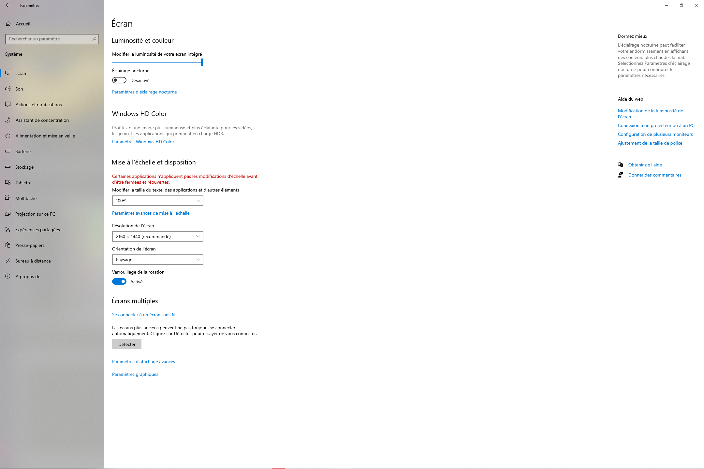

Pour garantir une expérience de jeu optimale et pour prévenir d'éventuels problèmes, nous vous suggérons de régler les paramètres d'affichage de votre système Windows à 100%. Cette recommandation vise à assurer une visualisation claire et une performance optimale du jeu sur votre écran d'ordinateur. L'ajustement des paramètres d'affichage peut grandement contribuer à une expérience de jeu fluide et agréable.

Actuellement, le jeu est exclusivement compatible avec les ordinateurs, ce qui signifie qu'il n'est malheureusement pas possible de jouer sur des appareils mobiles. Nous travaillons activement pour étendre la compatibilité à d'autres plateformes, mais pour le moment, l'expérience de jeu optimale est assurée sur un ordinateur. Nous vous remercions de votre compréhension et nous sommes impatients de vous offrir une expérience de jeu étendue à l'avenir.